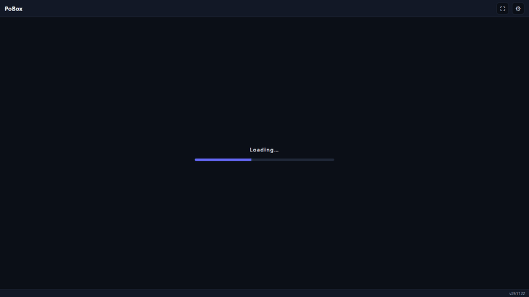
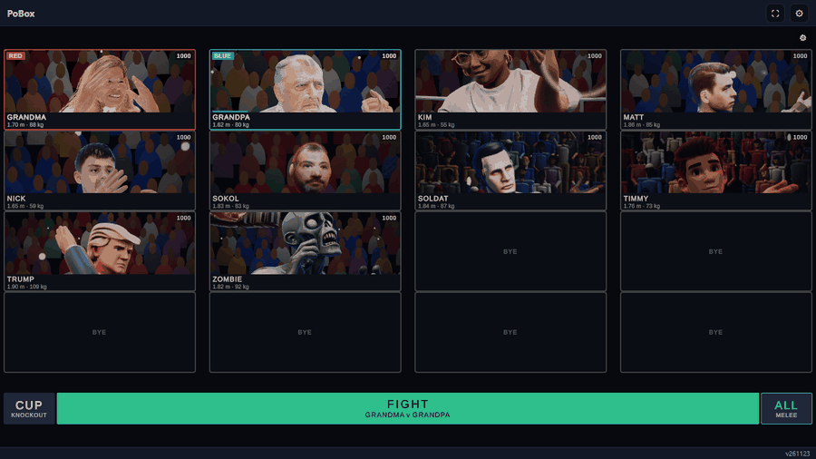
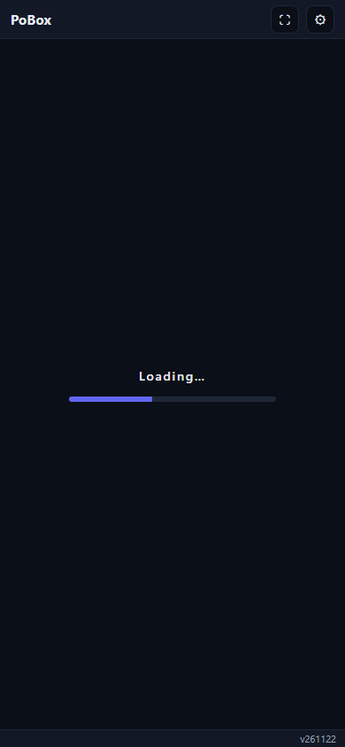
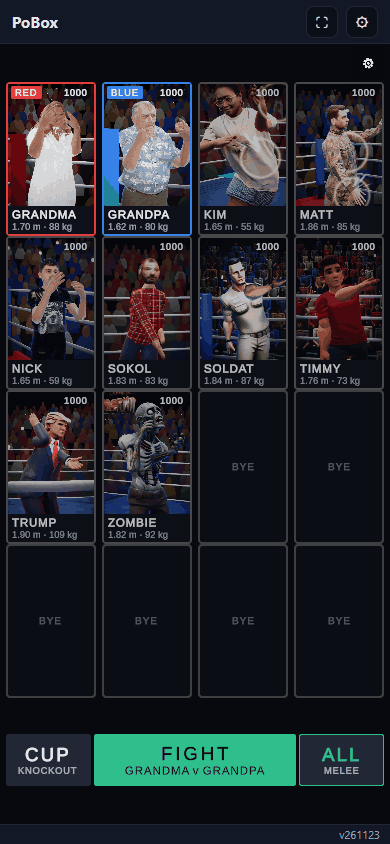
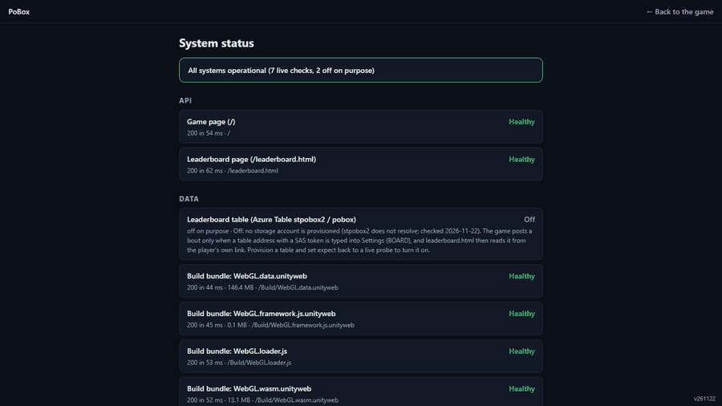
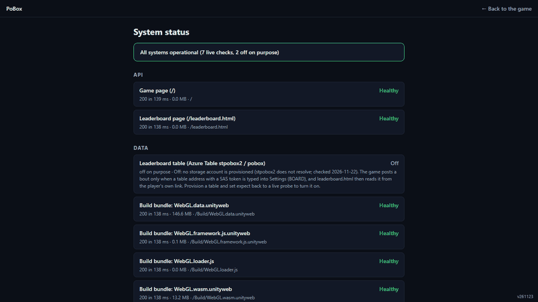
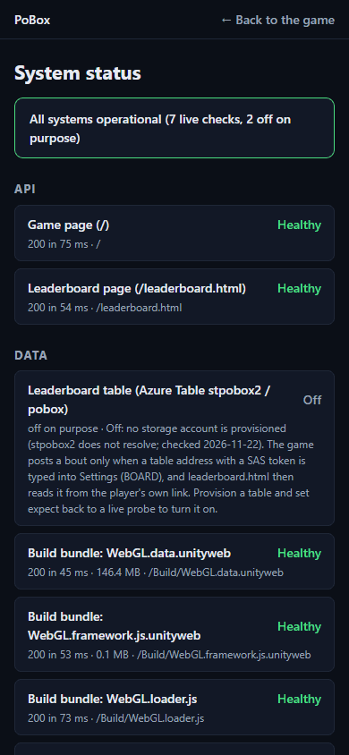
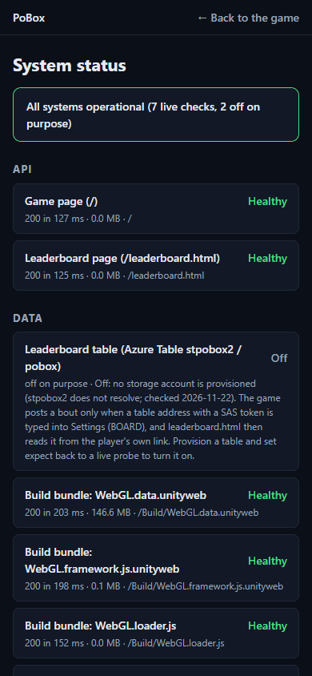
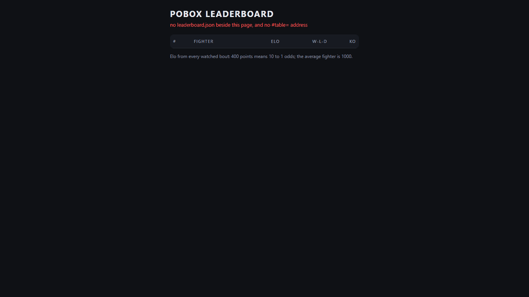
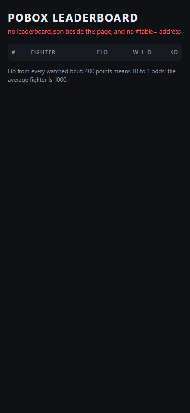

v4-audit

home · 1366 px
Before: the live v261122 build (401dc99) still loading after 25 s. After: the local v261123 build (4de772f + v4) on the boxer screen. Page chrome unchanged (title top-left, version bottom-right, outside the canvas); the viewport now allows pinch zoom and the game frame is a <main> landmark (axe meta-viewport + region fixed). · changed region boxed in the side-by-side image


home · 390 px
Before: the live v261122 build (401dc99) still loading after 25 s. After: the local v261123 build (4de772f + v4) on the boxer screen. Page chrome unchanged (title top-left, version bottom-right, outside the canvas); the viewport now allows pinch zoom and the game frame is a <main> landmark (axe meta-viewport + region fixed). · changed region boxed in the side-by-side image


diag · 1366 px
/diag results are cached 60 s in the tab (?fresh re-probes); rows and banner unchanged. Sizes read 0.0 MB in the after shot because the local server sends no Content-Length on HEAD. · changed region boxed in the side-by-side image


diag · 390 px
/diag results are cached 60 s in the tab (?fresh re-probes); rows and banner unchanged. Sizes read 0.0 MB in the after shot because the local server sends no Content-Length on HEAD. · changed region boxed in the side-by-side image


leaderboard · 1366 px
No change intended (layout identical). · no pixel change


leaderboard · 390 px
No change intended (layout identical). · no pixel change
